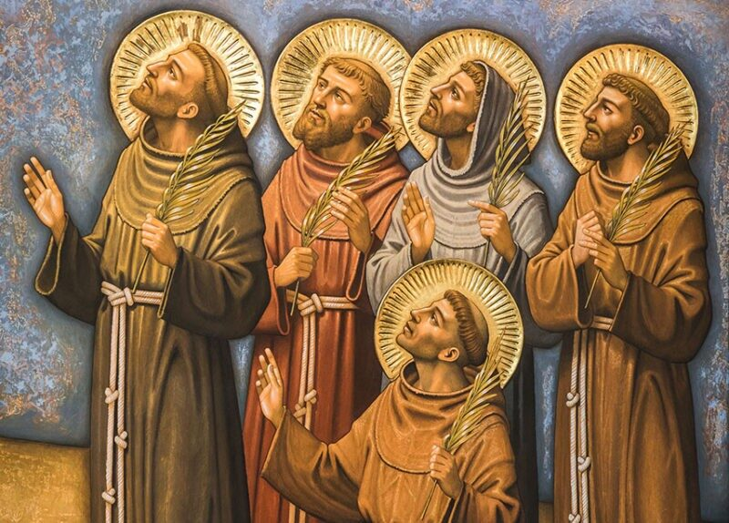

Les protomartyrs de l'ordre franciscain
Maroc, 16 janvier 1220, quartier Guéliz de Marrakech. Ce qui se déroule là est un événement pour le moins singulier : le sultan lui-même décapite six frères franciscains. Ceux-ci avaient été arrêtés à Séville, alors sous occupation sarrasine, et conduits au Maroc pour y être jugés. On leur reprochait d'avoir prêché au nom du Christ et, comble d'audace, d'avoir exhorté le sultan lui-même, commandeur des croyants, à se convertir.
Aujourd'hui, à cet endroit, s'élève une gracieuse église catholique, la seule de la région, construite en 1928. Ce petit sanctuaire a pu voir le jour grâce à l'intérêt des autorités françaises et à une quête à laquelle ont pris part toutes les communautés franciscaines du monde. L'édifice est bien sûr dédié aux « Martyrs de Marrakech », mais qui sont-ils, et pourquoi nous concernent-ils ?
Les martyrs sont au nombre de cinq. Ils s'appellent Bérard, Othon, Pierre, Adjute et Accurse, mais on les connaît mieux sous le nom de « premiers martyrs franciscains » ou de « protomartyrs ».
Ces martyrs revêtent une importance particulière pour les franciscains, au point que le Séraphique Patriarche, en apprenant la nouvelle, s'écria : « Maintenant je puis dire en toute certitude que j'ai cinq frères mineurs ».
La vocation du frère mineur est celle de la parfaite conformité à Jésus-Christ qui, en véritable ami, a donné sa vie pour nous. La mort de ces frères était donc la preuve de l'ardeur avec laquelle les premiers compagnons de saint François tenaient à cette identification.
Martyre, en effet, signifie témoignage : affirmation subjective et objective de la foi. Subjective, parce que le martyr atteste ainsi sa propre conviction, qui s'identifie à sa personnalité ; objective, parce que, par cette affirmation, le martyr veut annoncer le Christ et montrer que la vérité vaut plus que sa propre vie. Il devient ainsi un motif de crédibilité et acquiert une fécondité missionnaire : « le sang des chrétiens est une semence » (Tertullien).
De fait, le plus beau fruit de cette « semence » n'a pas tardé à mûrir. Il s'agit de la vocation franciscaine de Fernand, un jeune prêtre portugais qui, ému par le témoignage de ces religieux, décida de tout quitter pour suivre le Christ de plus près, à leur exemple.
Bien qu'il désirât de tout son cœur suivre l'exemple de ses confrères, le Seigneur le destinait à autre chose. Il deviendrait saint Antoine de Padoue, premier maître de théologie de l'Ordre franciscain, envoyé par saint François lui-même prêcher dans le sud de la France. Pie XII le proclama docteur de l'Église et, huit siècles plus tard, il demeure l'un des saints les plus vénérés au monde. À Padoue, sa ville d'adoption, il est devenu « le Saint » par excellence, et dans le monde entier il est difficile de trouver une église catholique où ne soit exposée à la vénération au moins une de ses images.
Soutenez les frères et leur apostolat.
Votre contribution permettra à la communauté de vivre concrètement la compassion et la communion de l'Évangile.
SOUTENEZ-NOUS